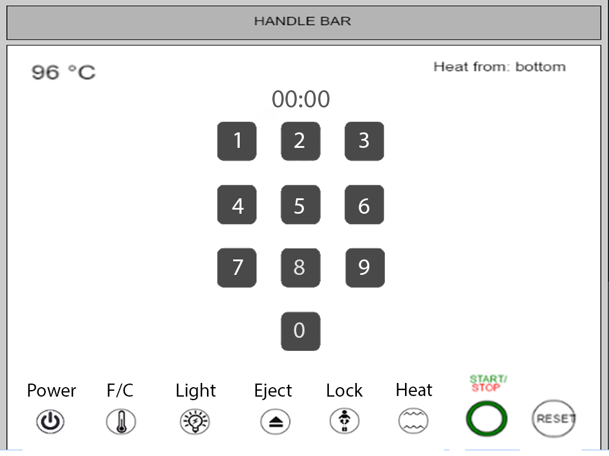
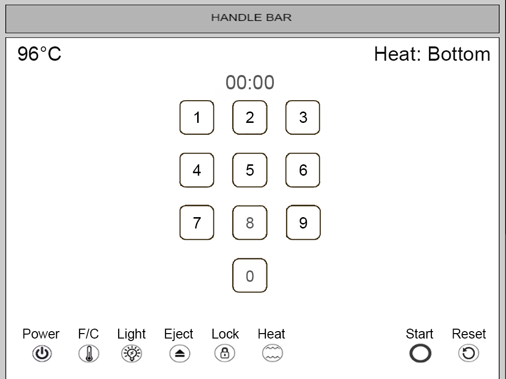

BEFORE
Upon startup, the user has an option to login to an account, add a user to the homepage, or continue as a guest.
Based on what we've learned in class, we've revised a few different aspects of Kevin's original toaster according to the design strategies we've seen over the past few weeks
We chose to change the alignment of logos and buttons in his design so that it will all fall within a gridline pattern. We spent the time aligning the buttons in the bottom along with the number pad which created a more consistent look throughout and created a more pleasing user interface.
Based on the information that we've learned from the icon unit, we decided to get rid of the baby icon that represented the lock and replace it with a more commonly used lock logo. Additionally, we thought that the writing for start and stop was inconsistent with the other logos, so we decided to integrate start and stop in with the other logos to create a more consistent UI. Additionally, we separated out the lock, farenheight, light, eject, lock, and heat buttons apart from start and reset, so that the user has some space in between logos so as not to confuse or disorient the user
In terms of text, we decided to increase the size of most texts in order to improve legibility.
AFTER
